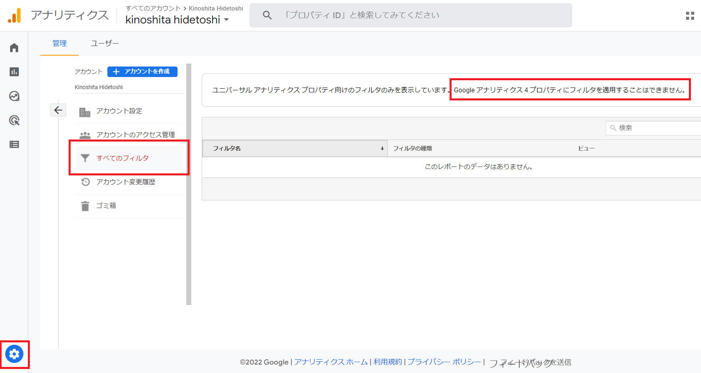
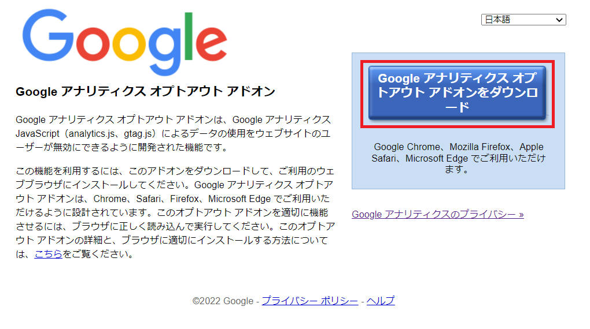
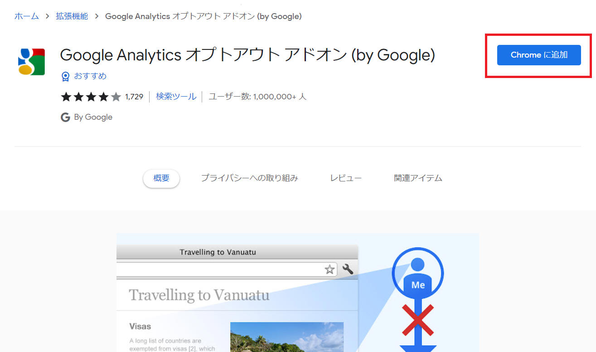
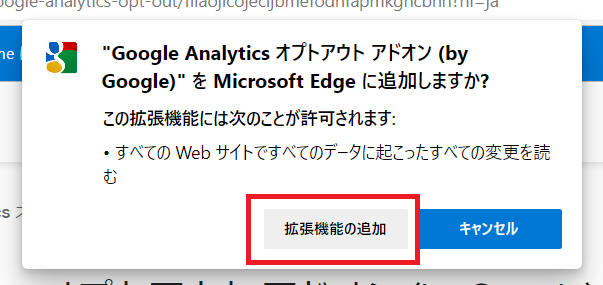

1.
自分のIPアドレスなど、除外したいIPアドレスが何であるかを確認しましょう。サーバー監視/ネットワーク監視サービス にアクセスすると、現在使っているパソコンのIPアドレスが表示されます。
2.
Googleアナリティクスのフィルタ機能を使って、自分のIPアドレスのフィルタ設定を行います。
Googleアナリティクスの管理画面を開き、「管理」→「全てのフィルタ」の順にクリックします。

「ユニバーサル アナリティクス プロパティ向けのフィルタのみを表示しています。Google アナリティクス 4 プロパティにフィルタを適用することはできません。 」
と表示されました。どうやら私が使用している環境では IP アドレスによるフィルタを適用することはできないみたいです。
自分のアクセスはアドオンを使うことで除外できます。アドオンとは、ソフトウェアなどに追加される拡張機能のことで、Webブラウザには多くのアドオンが用意されています。アクセスを除外するためには、使用しているブラウザへ「Google Analytics オプトアウト アドオン」を追加します。
1.
「Google Analytics オプトアウト アドオン」をクリックします。
2.
下図画面を表示したら赤枠部分をクリックします。

3.
下図画面を表示したら「Chrome に追加」をクリックします。

4.
下図ポップアップを表示したら「拡張機能の追加」をクリックします。

以上でインストールを完了です。
これで Google アナリティクス の分析対象となりません。
本ページの情報は、特記無い限り下記 MIT ライセンスで提供されます。
|
MIT License Copyright (c) 2022 Kinoshita Hidetoshi Permission is hereby granted, free of charge, to any person obtaining a copy of this software and associated documentation files (the "Software"), to deal in the Software without restriction, including without limitation the rights to use, copy, modify, merge, publish, distribute, sublicense, and/or sell copies of the Software, and to permit persons to whom the Software is furnished to do so, subject to the following conditions: The above copyright notice and this permission notice shall be included in all copies or substantial portions of the Software. THE SOFTWARE IS PROVIDED "AS IS", WITHOUT WARRANTY OF ANY KIND, EXPRESS OR IMPLIED, INCLUDING BUT NOT LIMITED TO THE WARRANTIES OF MERCHANTABILITY, FITNESS FOR A PARTICULAR PURPOSE AND NONINFRINGEMENT. IN NO EVENT SHALL THE AUTHORS OR COPYRIGHT HOLDERS BE LIABLE FOR ANY CLAIM, DAMAGES OR OTHER LIABILITY, WHETHER IN AN ACTION OF CONTRACT, TORT OR OTHERWISE, ARISING FROM, OUT OF OR IN CONNECTION WITH THE SOFTWARE OR THE USE OR OTHER DEALINGS IN THE SOFTWARE. |
| 2022-05-24 | - | 新規作成 |